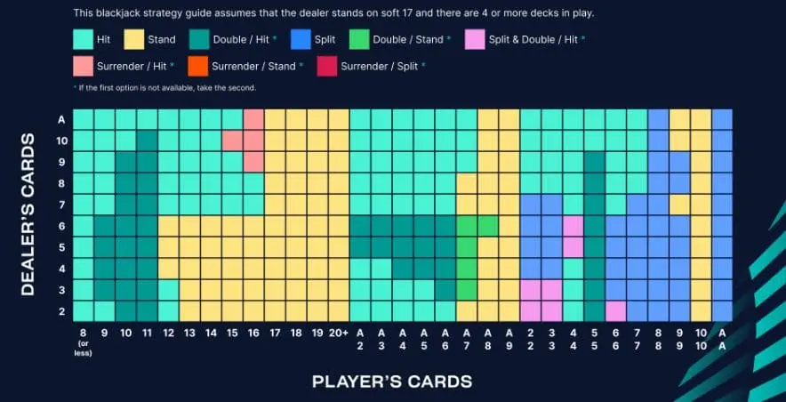
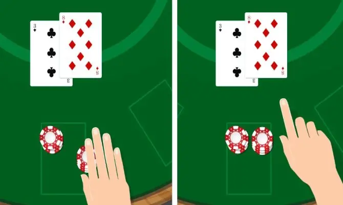

Mit der Blackjack-Grundstrategie haben Sie noch mehr Gewinnchancen
Blackjack ist ohne Zweifel eines der beliebtesten Kartenspiele, die Sie in einem Online-Casino spielen können. Und dafür gibt es gute Gründe. Zunächst einmal ist Blackjack sehr einfach zu lernen . Die Regeln sind einfach, das Spiel ist schnell zu erlernen und es gibt nicht zu viele Wettmöglichkeiten, wie es beim Roulette der Fall ist. Darüber hinaus ist es auch ein Casinospiel mit einem sehr niedrigen Hausvorteil und eines der wenigen Spiele, bei denen Sie eine Strategie effektiv einsetzen können (Blackjack Grundstrategie) um nur ein wenig mehr Gewinnchancen zu haben.
Spielen nach der Blackjack Grundstrategie
Es gibt Hunderte von Strategien, die im Casino angewendet werden können. Es gibt eine Reihe von Strategien für jedes Casinospiel. Aber während viele Spieler glauben, dass sich viele dieser Wettmethoden tatsächlich auszahlen, tun dies nur eine Handvoll. Eine davon ist die Blackjack Grundstrategie. Dies ist eine ziemlich einfache Methode, um eine etwas bessere Gewinnchance zu haben, als wenn Sie die Strategie nicht anwenden würden.
Die Blackjack Grundstrategie basiert auf einer mathematischen Wahrscheinlichkeitsrechnung basierend auf der Anzahl der Karten in einem Deck. Die Strategie ist auch sehr einfach anzuwenden, denn es gibt eine spezielle Strategiekarte dafür. Diese Karte zeigt alle möglichen Hände, die Sie beim Blackjack bekommen können. Die beste Wahl wird für jede Hand angegeben, ob in Kombination mit der offenen Karte des Dealers oder nicht. Sie müssen also nur den Anweisungen auf der Strategiekarte folgen, um Ihre Chancen am Blackjack-Tisch zu erhöhen. Sie können die Strategiekarte einfach griffbereit halten und werden von Ihrem Lieblingscasino nicht als Betrug angesehen.
Verdoppeln und teilen
Wie bei so vielen anderen Casinospielen gibt es eine Reihe zusätzlicher Wetten, die Sie am Blackjack-Tisch platzieren können. Zusätzlich zum Bitten um eine Karte und Stehenbleiben können Sie sich in bestimmten Fällen auch für Verdoppeln oder Teilen entscheiden. Sie müssen jedoch immer eine zusätzliche Wette platzieren, die Ihrer ersten Wette entspricht. Es stellt sich jedoch die Frage, ob es sinnvoll ist, diese beiden Optionen (Verdopplung und Aufteilung) zu verwenden. In der Regel wenden Spieler, die nicht die grundlegende Blackjack-Strategie anwenden, das Splitten und Verdoppeln falsch an.
Ein gutes Beispiel und eine häufige Situation am Blackjack-Tisch ist, wenn zwei Zehner ausgeteilt werden. Weniger erfahrene Spieler werden in 9 von 10 Fällen dazu neigen, die beiden Karten zu teilen. Nicht sehr klug, denn mit 20 auf der Hand stehen die Chancen gut, dass die Runde mit einem Gewinn abgeschlossen wird. Wenn Sie sich jedoch dafür entscheiden, zwei Hände mit 10 zu beginnen, kann sich dies natürlich als vorteilhaft erweisen, aber die Chance, dass dies nicht geschieht, ist nur einen Bruchteil höher. In diesem Fall ist die klügste Wahl nicht zu teilen, sondern zu passen. Wenn Sie sich die Blackjack-Basisstrategiekarte ansehen, werden Sie sehen, dass dies auch deutlich angegeben ist.
Verdoppeln macht wirklich nur Sinn, wenn man gute Karten in der Hand hat und die offene Karte des Dealers nicht so günstig ist. Angenommen, Sie bekommen eine Fünf und eine Sechs, dann ist das im Grunde eine Gelegenheit, zu verdoppeln. Wenn die offene Karte des Dealers jedoch eine Zehn ist, ist die Gewinnchance erheblich geringer, als wenn die offene Karte des Dealers eine Vier, Fünf oder Sechs ist. Verdoppeln macht also nur Sinn, wenn die offene Karte des Dealers weniger günstig ist.
Verwenden Sie niemals die Versicherung, die Ihnen das Casino anbietet
Neben dem Verdoppeln und Splitten gibt es noch eine dritte Option, die Sie in bestimmten Fällen nutzen können, nämlich die Versicherung. Eine Versicherung wird Ihnen angeboten, wenn die aufgedeckte Karte des Dealers ein Ass ist. In diesem Fall benötigt der Dealer nur eine Zehn, um einen natürlichen Blackjack zu machen.
Ein Ass und eine Zehn wird als natürlicher Blackjack bezeichnet. Eine Sieben, Fünf und Zehn ist auch 21, aber kein natürlicher Blackjack. Wenn Sie die Versicherung nutzen, müssen Sie erneut eine Wette platzieren. Wenn der Dealer tatsächlich einen natürlichen Blackjack erhält, verlieren Sie die erste Wette, aber die zweite Wette wird Ihnen trotzdem ausgezahlt. In diesem Fall verlieren Sie in der betreffenden Spielrunde nichts.
Die Wahrscheinlichkeit, dass ein natürlicher Blackjack fällt, wenn die aufgedeckte Karte des Dealers eine Zehn ist, ist jedoch viel geringer als die Wahrscheinlichkeit, dass eine weitere Karte gezogen wird. Aus diesem Grund weist die grundlegende Blackjack-Strategie darauf hin, die Versicherung einfach niemals zu nutzen.
Wenn Sie eine große Anzahl von Spielrunden spielen, denken Sie an ein paar hundert, kommt diese Situation ziemlich oft vor. Wenn Sie die Versicherung immer nutzen, erleiden Sie per Saldo einen Verlust, denn von einem natürlichen Blackjack ist häufiger gar keine Rede als von einem.
Kluge Spieler verwenden immer eine Blackjack Grundstrategie
Blackjack ist eines der wenigen Spiele im Casino, bei denen Sie langfristig einen Gewinn erzielen können. Dies ist auch der Grund dafür, dass professionelle Spieler hauptsächlich hinter dem Blackjack-Tisch zu finden sind. Wenn Sie schon seit einiger Zeit Blackjack spielen, aber die Grundstrategie für Blackjack noch nicht verwendet haben, dann probieren Sie es unbedingt aus, um den Unterschied zu bemerken. Wenn Sie gerade erst anfangen, Blackjack zu spielen, bringen Sie sich sofort bei, immer nach der Blackjack-Strategiekarte zu spielen.
Die Mitnahme der Strategiekarte ins Casino ist überhaupt kein Problem. Auch beim Spielen mit Bitcoins oder Ethereum . Die Verwendung der grundlegenden Blackjack-Strategie wird vom Casino auch nicht als Glücksspiel angesehen. Schließlich sind die Wahrscheinlichkeitsrechnungen für jedermann berechenbar und gehören einfach mit dazu. Außerdem werden Sie feststellen, dass Sie bei mehrwöchiger Anwendung der Strategie immer weniger auf die Strategiekarte schauen, weil Sie gelernt haben, welche Wahl die sinnvollste is